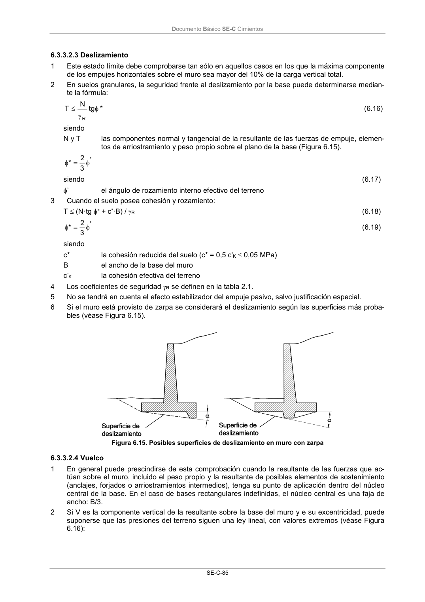

DB-SE-C Cimientos · edición 2019-12-20 · capa oficial
Documento DB-SE-C-oficial · SHA-256 del PDF a71133f4b0dca253e45ea3071c70f2a512354bcc5cd841bf89b1a502f567ac5e
Página física 90 de 165.
Copia fiel del PDF fuente · Fuente oficial
Ficha de la disposición en la fuente oficial
Formato: Texto de la página (Markdown)
Documento Básico SE-C Cimientos
SE-C-85
6.3.3.2.3 Deslizamiento
1
Este estado límite debe comprobarse tan sólo en aquellos casos en los que la máxima componente
de los empujes horizontales sobre el muro sea mayor del 10% de la carga vertical total.
2
En suelos granulares, la seguridad frente al deslizamiento por la base puede determinarse median-
te la fórmula:
*
tg
N
T
R
(6.16)
siendo
N y T
las componentes normal y tangencial de la resultante de las fuerzas de empuje, elemen-
tos de arriostramiento y peso propio sobre el plano de la base (Figura 6.15).
'
3
2
*
siendo
(6.17)
’
el ángulo de rozamiento interno efectivo del terreno
3
Cuando el suelo posea cohesión y rozamiento:
T (N·tg + c*·B) / R
(6.18)
'
3
2
*
(6.19)
siendo
c*
la cohesión reducida del suelo (c* = 0,5 c'K 0,05 MPa)
B
el ancho de la base del muro
c’K
la cohesión efectiva del terreno
4
Los coeficientes de seguridad R se definen en la tabla 2.1.
5
No se tendrá en cuenta el efecto estabilizador del empuje pasivo, salvo justificación especial.
6
Si el muro está provisto de zarpa se considerará el deslizamiento según las superficies más proba-
bles (véase Figura 6.15).
Figura 6.15. Posibles superficies de deslizamiento en muro con zarpa
6.3.3.2.4 Vuelco
1
En general puede prescindirse de esta comprobación cuando la resultante de las fuerzas que ac-
túan sobre el muro, incluido el peso propio y la resultante de posibles elementos de sostenimiento
(anclajes, forjados o arriostramientos intermedios), tenga su punto de aplicación dentro del núcleo
central de la base. En el caso de bases rectangulares indefinidas, el núcleo central es una faja de
ancho: B/3.
2
Si V es la componente vertical de la resultante sobre la base del muro y e su excentricidad, puede
suponerse que las presiones del terreno siguen una ley lineal, con valores extremos (véase Figura
6.16):
